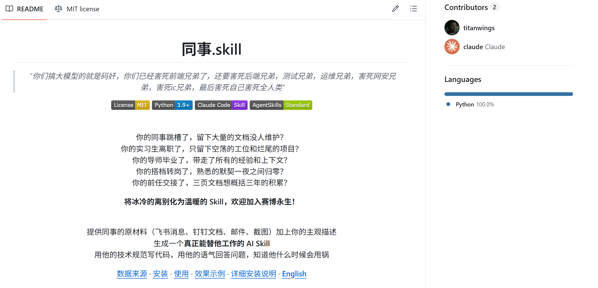
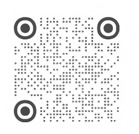

杜思敏，北京大成（成都）律师事务所律师，将 AI 深度融入争议解决实务，用 AI 重构办案流，多次受邀进行 AI 实务分享，公众号「AI歧路花园」作者，小红书：Mira魔法研究员。
实践
AI + 争议解决
材料整理、期限管理、Skill、MCP、案件工作流，均来自真实办案场景。
分享
AI 实务分享
面向律师同行，围绕工具、流程、判断和交付展开。
高效协作公式与未来竞争力
AI 深度融入争议解决实务。
杜思敏，北京大成（成都）律师事务所律师，将 AI 深度融入争议解决实务，用 AI 重构办案流，多次受邀进行 AI 实务分享，公众号「AI歧路花园」作者，小红书：Mira魔法研究员。
材料整理、期限管理、Skill、MCP、案件工作流，均来自真实办案场景。
面向律师同行，围绕工具、流程、判断和交付展开。
文本密集的行业，最先被重塑
法律，跑不掉，也最有机会。
编程从“写代码”走向“说清目标、读懂结构、持续调试”。
视觉设计从“会设计软件”走向“会描述需求、会验收结果”。
天然的长文本行业——正是大模型的"老本行"。
法律工作天然适合拆解、协作、复用和校验。
从咨询到交付，本来就是一条产线
AI 更适合进入流程，成为持续推进工作的系统。
合同、证据、聊天记录、判例、法规、客户事实，天然需要组织。
检索、归纳、比对、论证、起草、校验、定稿，每一步都有明确任务。
流程化、清单化、标准化，是法律服务多年形成的工作底座
律师经验抽象出来的 SOP，就是法律 Agent 的工作流。
合同审查有审查清单，案件办理有办案规范，尽调有尽调清单。
每一步该做什么、先做什么后做什么，大量实务经验已经被写进方法论。
把已经存在、被验证过的工作流程，用 Agent 复现。
法律任务拆小以后，就进入 Agent 的工作方式
任务拆解 → 工具调用 → 反馈迭代 → 再循环。
识别合同、文书中的主体、金额、日期、条款、材料类型。
调用法条、案例、文书模板、行业资料。
形成清单、表格、报告、函件、文书。
根据结果调整检索、重排结构、补充核验。
把已有工作方法换一个角度落地
拆解、复用、自动化、迭代。
复杂合同先看主体资格，再看核心条款，然后关联法规，最后标注风险。
反复检查的条款，提取成审查清单；反复办理的事项，沉淀成流程。
重复事项进入工具和 Agent 工作流。
先跑第一版，再根据真实错误持续改进。
法律团队的分工结构，本来就适合 Agent 协作
这种天然角色分工，正是构建 Agent 各司其职、互相协作的基础。
负责法律判断、方案取舍、对外沟通和最终责任。
整理证据、起草文书、推进材料和节点。
检索案例、提取信息、完成基础比对。
跟进任务、提醒异常、维护进度和交付物。
边界里的执行，责任里的判断
AI 做执行，律师做判断。
让 AI 在律师设定的边界里做执行，判断、责任和信任仍然留在专业服务之中。
对话框、通用 Agent、办公执行 Agent、IDE 工作台、法律垂直 Agent。
进入 Agent 办公前，先看单次问答的边界
法律工作流与单次问答之间，差在结构。
案件材料往往是一整个文件夹，对话框只能看到被粘贴进去的片段，人工持续搬运。
一问一答缺少持续工作记忆。回答之后，仍需复制、改格式、建表、存档、转发。
格式、边界、口吻留在单次对话中，工作方法仍停留在局部。
一个权威而朴素的定义
Anthropic：大模型在一个"循环"里，自主地使用工具。
大模型：理解、推理、生成、多模态。
"工作承载结构"——把模型包装成能办公的东西。Agent 多出来的，正是这套结构。
Agent 多出来的“工作结构”
让模型从会回答，走向能交付。
最后要交付什么。
进入资料现场。
会操作，也会表达。
规划、执行、调整。
关键节点回到律师判断。
看交付物，也看过程记录。
规划任务、调用工具、整理资料、形成交付物
围绕一个目标，自主拆解步骤、调用工具、根据反馈调整，并形成交付物。
通用型 Agent 产品，整合联网浏览、文件处理和多步骤任务执行。
基于 Kimi 的 Agent 能力，强调长上下文理解、任务规划和工具调用。
字节跳动旗下 Agent 创建与应用搭建平台，可组合知识库、工作流和插件。
通用型自主 Agent 产品，强调任务规划、工具调用和交付物生成。
智谱提供的 Agent 能力，面向网页、应用和连续操作任务。
从聊天窗口进入办公现场
AI 开始和文档、表格、日程、审批、任务一起工作。
企业级智能工作台，把 AI 接入日常协作、知识检索和流程推进。
桌面端 AI 助手，将 Qoder 的 Agent 能力从编程扩展到日常工作；用户只需描述目标，它会自主规划、执行并交付文件整理、数据处理、文档生成等任务。
把文件夹、编辑器、终端、AI 工具放进同一个工作现场
IDE 的价值在于集成工作现场。
面向代码与文本项目的 AI IDE，可在文件夹、编辑器和 AI 对话之间协同工作。
字节跳动旗下 AI IDE，提供对话、代码生成、项目理解和 Agentic 开发能力。
打开文件夹、引用文件、生成新文件，让 AI 在材料现场推进任务。
命令行、脚本、格式转换和版本管理，进入可重复、可追踪的工作流。
专业数据 + 专业流程 + 任务推进能力
法源、引用、流程和交付链路，是法律垂直 Agent 的基础。
以法规、案例、期刊、专题等法律数据库为底座，服务法条与类案检索场景。
提供法律检索、类案分析和裁判规则整理等法律数据服务。
面向律师办案、知识管理和法律写作的 AI 工作入口。
提供法律检索、法规案例问答和文书辅助能力。
法律垂类 Agent 平台，结合知识库和工作流完成法律任务。
法律专业内容与行业知识服务平台，持续接入 AI 能力。
按入口看它解决哪一段工作
合同、检索、问答、知识服务。
法律信息、法规案例、实务专题和专业内容数据库。
合同模板、合同审查、合同管理和交易文件自动化。
合同审查、智能起草、风险提示与合同知识库类工具。
法律检索、法规案例问答和文书辅助入口。
每一步都有可验收产物。
目标、格式、语气、权限写清楚。
事实、依据、推理逐层复核。
模板、清单、知识库、Skill。
AI 进任务前，先把任务、材料、步骤、产物、边界讲清楚
拆解 × 约束 × 校验 × 沉淀。
从 OCR 到 AI 友好的材料入口
先退回上游，把散乱资料治理成可稳定调用的案件材料。
先转成 AI 能读取的文本。
解除版式锁定，让文字进入可处理状态。
保留标题层级、段落结构和引用线索。
把金额、日期、主体和记录变成结构化字段。
保留标题、链接、正文和来源结构。
把来源、时间、版本、引用建议和复核提示固定下来。
任务 ＝ 目标＋材料＋步骤＋产物＋边界
把原本交代助理的方式，写成 AI 可以执行的工作标准。
要完成什么
看哪些
先做什么
交什么形态
边界事项
把“分析”换成交付物
AI 从聊天切到交作业。
输出表格：文件名｜日期｜类型｜涉及主体｜关键信息｜关联争点｜待复核问题。待确认事项写“待确认”，保留原文件。
再往下抽一层
波兰尼："我们知道的，比能说出来的多。"
法条、案例。模型/数据库已有，无需重复说明。
拿到材料先做什么、长合同先看哪些条款。越自然的动作，越容易忘了教 AI。
给边界，也给格式
把交付物写清楚。
争议焦点｜依据（法条/案例）｜我方风险与下一步。
语气克制可核验。用 Markdown。
看地形分配控制权
约束的关键，是按地形分配控制权。
走错一步就报错（立案材料、算金额）。→ 给固定步骤/脚本。
方向对了就是旷野（综合研究、类案分析）。→ 只给框架和判断标准，留白。
可见、可停、可回溯
监督的重点，是在清晰边界内让工作持续推进。
材料范围、输出格式、禁止事项、引用要求。
它在读什么、查什么、生成什么，过程可追踪。
方向选择、事实认定、法律适用、对外交付回到律师。
输入、工具调用、修改痕迹和最终版本可复盘。
真实材料被错误引用、错误概括、错误适用
案号和案例可能是真的，适用情形、法院观点和事实却被改写。
AI 写成“第六巡回法院在 Washington 案中撤销了角色提升”。判决原文实际维持了角色提升。
AI 写成“Anthony 案中无证据显示被告指挥他人”。案卷显示，被告明确承认了自己担任领导角色。
AI 引用量刑指南评注，称其中写明“单纯在场或知情不足”。法院查阅评注原文，未找到相同或实质相似内容。
专业法律 AI 仍会出现幻觉
斯坦福实证中的专业法律 AI 幻觉率。
带检索能力的专业法律 AI，仍可能给出错误法律回答。
事实、依据与引用，都必须能够回到原始材料逐项核验。
让这次经验进入下一次默认工作法
沉淀下来的是一套越来越贴合业务的工作方法。
所谓产线，就是给 AI 提供的 Skill 和工作流。改动目标是这条产线稳定产出的平均分。
下次规则要求区分客观材料、当事人主张、律师分析。
下次审查清单增加固定检查项。
固定的、针对特定任务的大型提示词
高频、标准化任务，省去每次重复说明“怎么做”。
把任务说明、操作步骤、参考资料和工具调用组织成可复用结构。
给 AI 写的一份特定任务“操作手册”。正是因为会“操作”，才有了“技能”。
官方定义
一个文件夹，核心是带 frontmatter 的 SKILL.md。
只读 name + description（元数据）——决定什么时候出场。
读完整正文——决定这次怎么干活。
加载 scripts / references / 模板——决定用什么工具和资料。
复杂 Skill 怎么组织
主文件负责导航，细节按需读取。
SKILL.md · scripts/ · references/ · assets/
触发条件、工作流骨架、子文件导航。
材料越多，越需要让上下文始终聚焦。
判断原则
一次性、偶发、不确定的，用普通对话就够了。
把经验拆出来，写成可复用的工作方法。

程序性知识
提取一个 Skill，本质上是在提取稳定工作方法。
法条、案例——AI 已经认识。
先看什么、先做什么——Skill 的主体。
说不出的直觉——最难翻译，最有蒸馏价值。
把"隐性"变成"可执行"
改造产线，结果随之升级。先做起来，再校准。
先跑任务，再看哪里出问题；完整 Skill 可以在实践中逐步长出来。
AI 出错的地方，往往正是隐性经验所在。
把"我是怎么做这一步的"翻译成步骤，补进去。
Anthropic 最佳实践
写入大模型缺少的“特定上下文”。
辅助整理设计思路
官方做的一个 Skill，辅助整理骨架、优化 description。
解决什么任务？什么时候触发？怎么一步步做？什么放主文件/references/scripts？哪里必须人工看？
边界设计和隐性经验提炼，仍然需要专业经验进入表达。
高频、标准化、边界明确的小任务
收到法院文书，运行对应管家，生成期间表和待办。
处理一审、二审常见文书，提取送达日期、答辩期、举证期、上诉期等。
处理执行文书和保全措施期限，提醒续封、续冻等节点。
处理仲裁通知，识别答辩期、仲裁期限、起诉期等。
统一读取任务中心，按今日、逾期、7 天内、30 天内展示待办。
核心：四层分离
材料太乱直接丢 AI，它平等对待、毫无章法。先给它秩序。
先建台账 → 权威版本表 → 四层笔记。让后面的分析建立在可靠的材料秩序上。
Model Context Protocol
它解决的是连接标准问题。
理解、规划、生成、归纳。
法律数据库、企业数据、文件系统、浏览器。
案卷、合同、表格、工作目录。
从只读、可追溯的工具开始
跑顺以后，再扩展到写入和自动操作。
北大法宝 · 华宇元典
企查查 · 天眼查
本地文件系统 · 内部知识库
浏览器 · 搜索 · 表格
让权威数据库进入文档工作流
北大法宝 MCP。
大模型与法律数据库分工各异。北大法宝做“插头”，Agent 做“插座”，一插上就是：模型推理 + 法宝权威数据 + 本地案卷上下文。
诉请归纳、法律依据、可点链接。
把本地程序、云平台和 AI 放到同一条工作流
CLI 是命令行入口，脚本只是把工具串起来。
读取云文档、上传下载云盘文件、处理表格和任务，把协作平台变成可调用入口。
批量导出、格式转换、PDF 生成，把办公文件处理纳入自动流程。
合同版本、文章稿、课件、办案模板进入可追踪的版本流。
文档转换、PDF 拆分合并、音视频抽取，本质上调用这些命令行工具。
当 AI 能交付任务，律师的核心价值是什么
任务与目的
放射科医生的目的核心价值在诊断病人，是诊断病人——AI 进来后人数不减反增。
关键在于是否清楚“为什么要写”。
但螺丝是局部的
"螺丝是局部的，解决方案是整体的。拧紧螺丝、发动机器，才是最要紧的。"
律师的服务是非标的，内部却被拆成一块块"标准件"。AI 最先接管的，正是落在"均值"上的标准件。
留给人的，是这三件
合起来，就是大家挂在嘴边的"判断力"。
从一团事实、情绪、利益里，找到真正要解决的症结。
在标准答案缺席的现实里，做取舍、给非标方案。
为这个判断，承担专业责任——牌照、责任心、信任。
客户送来的，常是他“误诊”后的结论
律师是解决社会问题的法律专家。
他坚持“要告对方违约”，真正要的也许只是尽快拿回款，或一个能体面退出的台阶。
H. L. A. Hart，《法律的概念》
开放结构：规则语言有确定适用，也会遇到疑难情形。
判断力的源头
胜诉概率之外，还有看着客户眼睛承担责任的确定感。
签字、出庭、发函，绑定执业声誉与责任。
大半夜惊醒，蹦出一个没考虑过的风险点；和当事人像战友，同呼吸共命运。
客户让渡的是风险和焦虑，律师提供的是“有人一起扛”的确定感。
AI（完成任务）× 律师（定义问题 · 承担判断 · 安顿信任）
乘号表达相互放大：判断力归零，整体归零。
检索、整理、生成、比对、格式化。
在真实关系、真实风险和真实后果里作出选择。
AI 把活干完，律师守住值得被信任的判断。
未来更稀缺的，也许是用 AI 放大判断力的律师。
拆解 × 约束 × 校验 × 沉淀。
AI（完成任务）× 律师（定义问题 · 承担判断 · 安顿信任）。
AI 歧路花园 · Mira魔法研究员
杜思敏 律师
AI 歧路花园

Mira魔法研究员